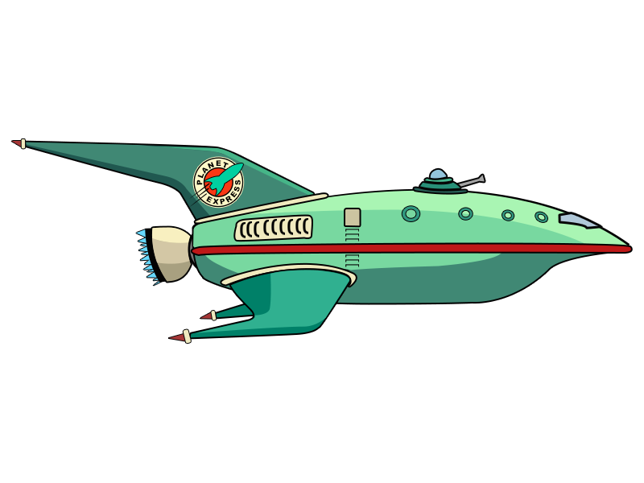

Welcome to a section of the Cat's Paw Nebula, an active star forming region within a molecular cloud. Massive young stars are nestled within orange-brown loops and tiers of dust, their bright blue starlight shining through. Massive star formation is still underway within fiery red rings amongst the clouds of brown space dust.
